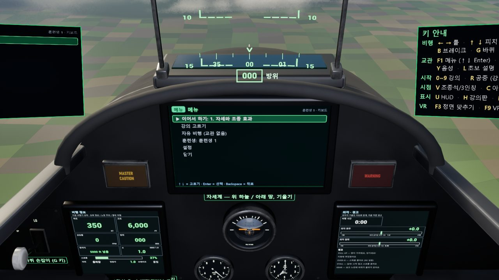
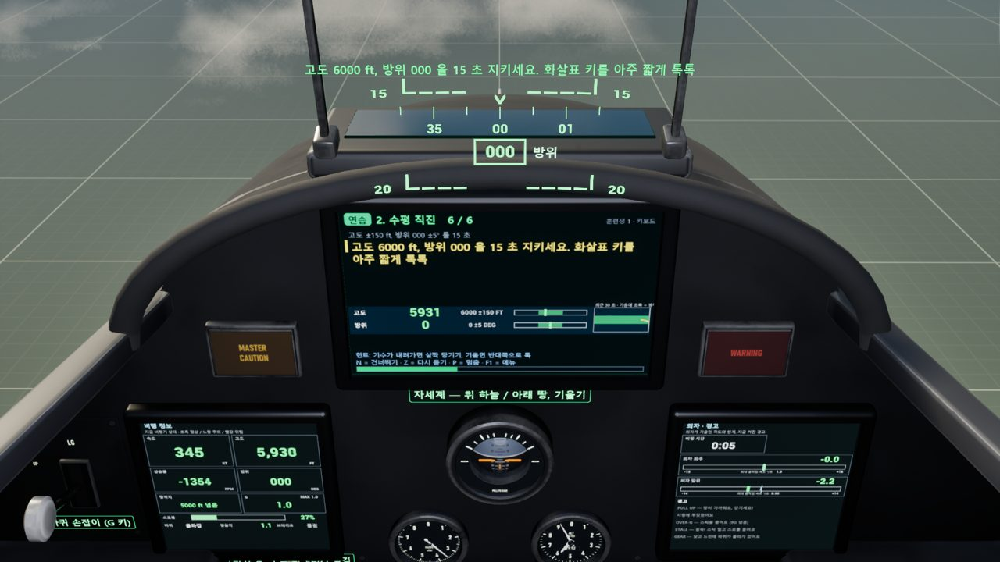
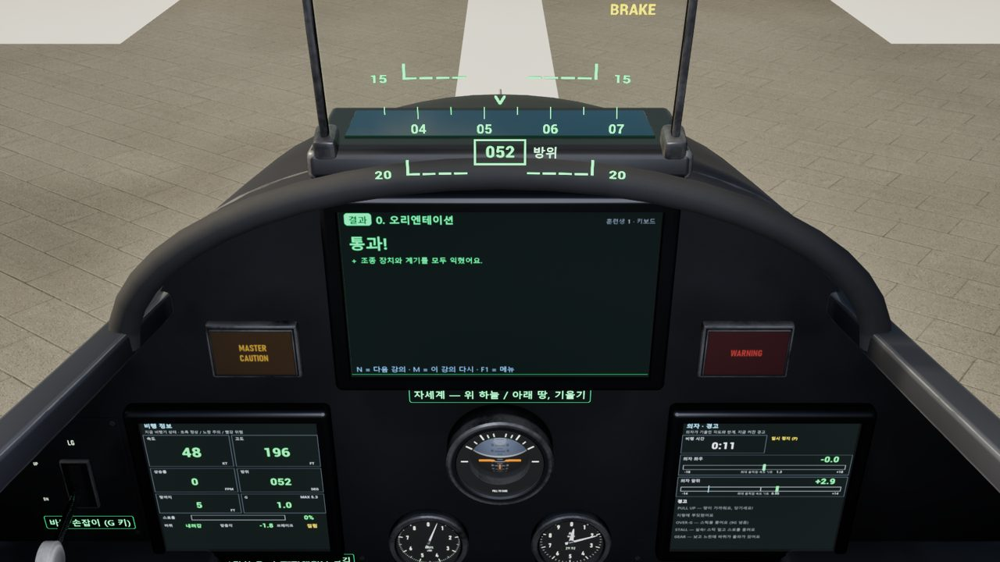
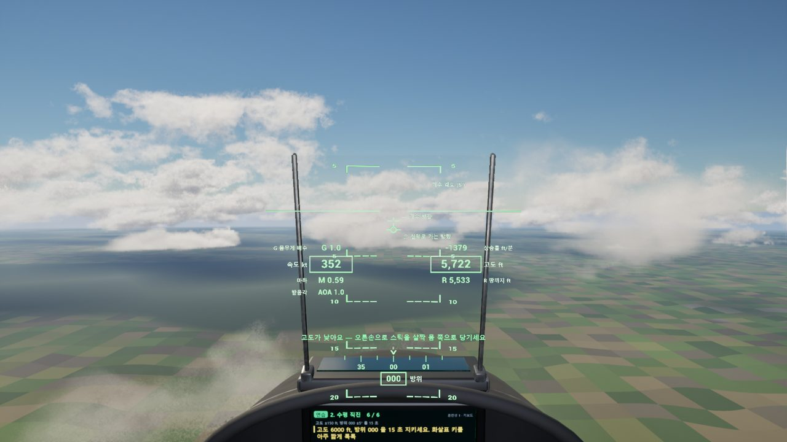
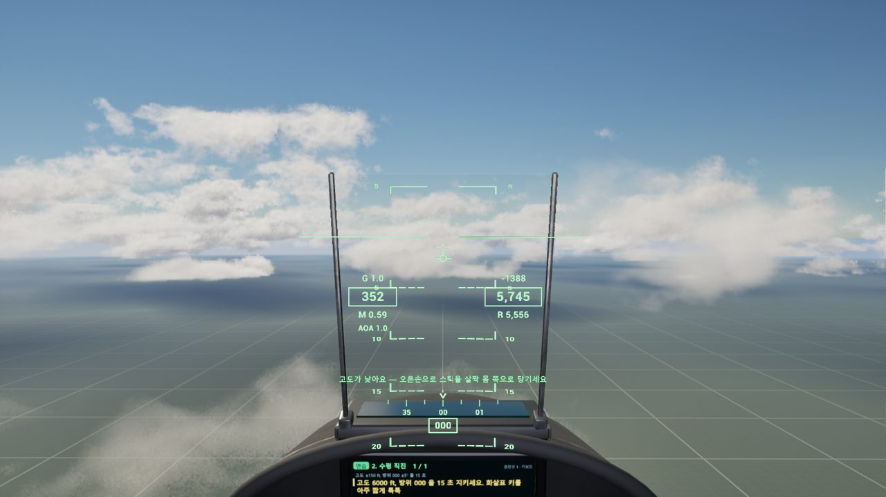
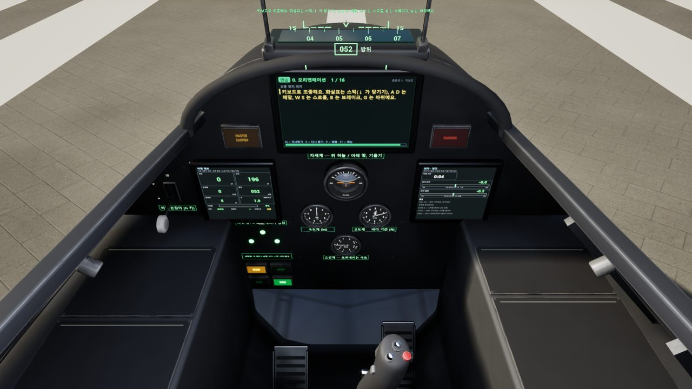
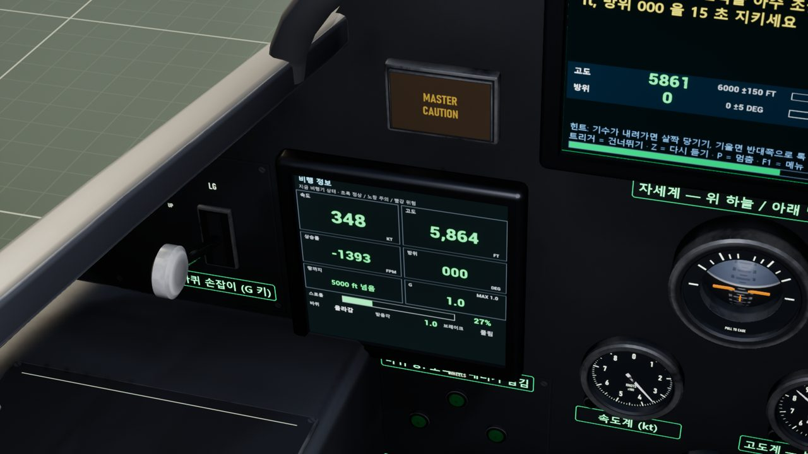
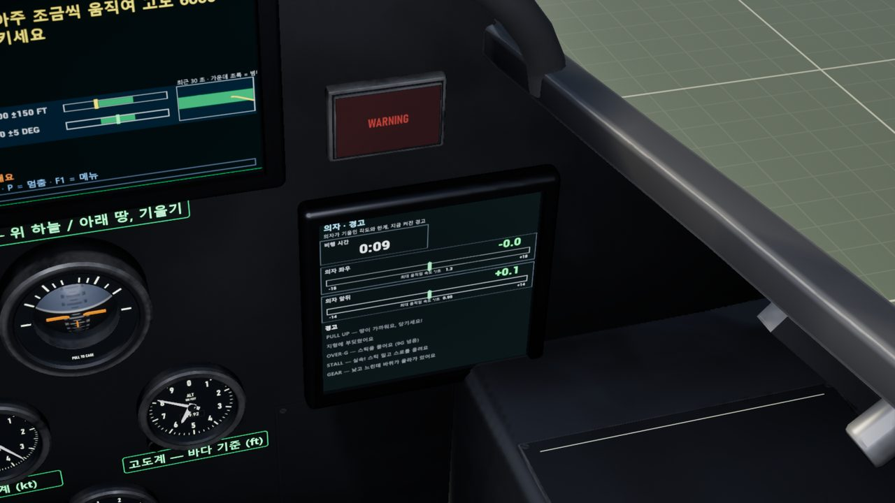
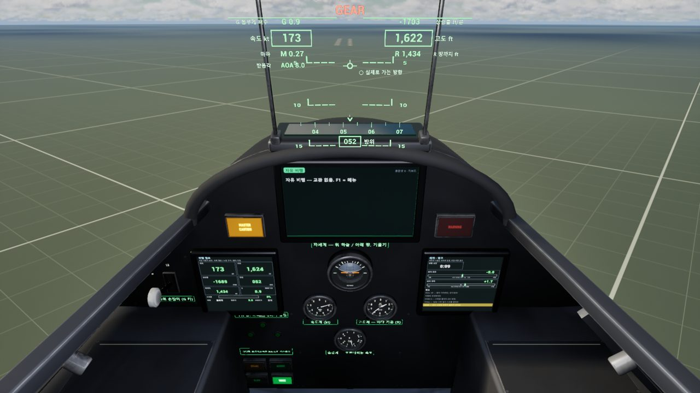

비행 훈련 설명서
비행기를 처음 몰아 보는 사람을 위한 설명서예요. 교관 목소리와 가운데 훈련 화면이 할 일을 하나씩 알려 주니, 이 글은 처음 한 번만 훑어보면 됩니다. 강의는 0 번(조종 장치 익히기)부터 차례로 하면 돼요.
1. 시작하기 (3 분)
- 운영자가 시뮬레이터를 켜 두면 화면에 메뉴가 떠 있어요. (켜는 법은 운영자 안내)
- 이어서 하기를 고르면 지난번에 멈춘 강의부터, 처음이면 0 번 강의부터 시작해요.
- 메뉴 고르기: 키보드는 ↑↓ 와 Enter, 의자(조종 장치)에서는 스틱을 앞뒤로 움직이고 트리거(스틱 앞쪽 버튼)로 선택해요. 마우스는 필요 없어요.
- 언제든 F1 로 메뉴, P 로 멈춤, Z 로 교관 말 다시 듣기.

2. 강의 한 개의 흐름
| 순서 | 무엇을 | 내가 할 일 |
|---|---|---|
| ① 브리핑 | 이번에 배울 것을 교관이 3~6 장으로 설명 | 다 들으면 N (의자: 트리거) |
| ② 시범 | 자동 조종이 먼저 날아 보여 줌. 화면 속 스틱·스로틀이 저절로 움직여요 | 보기만. 건너뛰려면 N |
| ③ 연습 | 단계별로 지시. 틀리면 교관이 바로 고쳐 줌 (“고도가 낮아요 — 살짝 당기세요”) | 지시대로. 막히면 Z 다시 듣기 |
| ④ 단독 점검 | 교관은 조용히 보고 점수만 매겨요 | 혼자 해 보기 |
| ⑤ 결과 | 점수와 등급, 잘한 점 · 고칠 점, 핵심 값 그래프 | N 다음 강의 · M 단독 점검 다시 |
통과 점수는 강의마다 화면에 나와요(보통 70 점). 기록은 훈련생 이름별로 저장돼서 다음에 이어서 할 수 있어요.


3. 조종 장치
| 하는 일 | 키보드 | 의자 (조종 장치) |
|---|---|---|
| 좌우로 기울기 (롤) | ← → | 오른손 스틱을 좌우로 |
| 기수 올리기 / 내리기 | ↓ = 당기기(기수 올림) · ↑ = 밀기(기수 내림) | 스틱을 몸 쪽으로 당기기 / 앞으로 밀기 |
| 기수를 좌우로 (땅에서 방향) | A D (페달) | 두 발 페달 |
| 엔진 힘 (스로틀) | W 올리기 · S 내리기 | 왼손 스로틀을 앞 / 뒤로 |
| 브레이크 | B (누르고 있기) | 발끝으로 페달 윗부분 누르기 |
| 바퀴 올림 / 내림 | G (계기판 왼쪽 흰 손잡이가 같이 움직여요) | |
4. 교관과 편의 기능
| 키 | 하는 일 |
|---|---|
| N / 트리거 | 다음 (브리핑 넘기기, 시범 건너뛰기). 단독 점검 중에는 두 번 눌러야 건너뛰어요(그 단계 0 점). |
| M | 다시 (결과 화면: 단독 점검 다시, 사고 뒤: 다시 하기, 연습 중: 강의를 처음부터) |
| Z | 교관이 방금 한 말 다시 듣기 |
| Y | 교관 음성 켜기 / 끄기 (꺼도 글씨는 계속 나와요). 목소리 크기 · 말 빠르기는 메뉴 → 설정 |
| L | 초보자 설명 켜기 / 끄기 (HUD 와 화면의 한국어 이름표). 처음엔 켜져 있어요 |
| I | 안내 방식 바꾸기: 자동 → 키보드 → 조종 장치. VR 헤드셋이나 조이스틱이 있으면 자동으로 조종 장치 말투(“오른손으로 스틱을…”) |
| P | 멈춤 / 계속 |
| F1 | 메뉴 (닫으면 하던 강의로 돌아가요) |
| F2 | 강의 끝내기 |
| 0~9 | 강의 바로 시작 (10 번은 메뉴 → 강의 고르기) |
| R / T | 공중 / 활주로에서 새로 시작. 강의 중에는 두 번 눌러야 해요(실수로 강의가 끝나지 않게) |
| V · K | 조종석 ↔ 밖에서 보기 · 키 안내판 |
쉬운 모드 · 느린 시간 (메뉴 → 설정)
- 쉬운 모드: 비행기가 45° 넘게 기울거나 너무 들리지 않게 컴퓨터가 잡아 줘요. ‘자동’이면 처음 두 번 시도에서만 켜져요. 10 번(G·곡예)은 꺼져 있어요.
- 느린 시간: 시간이 반 속도로 흘러요. 착륙처럼 바쁜 강의에 좋아요.
사고가 나면
땅에 세게 닿거나 활주로를 벗어나면 화면이 멈추고 교관이 왜 그렇게 됐는지 한 줄로 말해 줘요. M 이나 N 이면 바로 다시 해요. 공중 강의 연습 중이면 그 단계부터, 이륙 · 장주 · 착륙 강의와 단독 점검은 처음부터 다시예요.
5. 화면 읽기
처음엔 초보자 설명(L)이 켜져 있어 모든 숫자 옆에 한국어 이름과 단위가 붙어요. 색은 어디서나 같아요: 초록 = 정상, 노랑 = 주의, 빨강 = 위험.
단위 세 가지
| kt (노트) | 속도. 300 kt ≈ 시속 550 km |
| ft (피트) | 높이. 1000 ft ≈ 300 m |
| fpm | 1 분에 오르내리는 높이(ft). + 올라감, − 내려감 |
HUD (앞 유리의 초록 글씨)


| 위치 | 뜻 |
|---|---|
| 왼쪽 상자 | 속도 (kt). 위는 G(몸이 눌리는 힘, 1 = 보통), 아래는 마하 · 받음각 |
| 오른쪽 상자 | 고도 (ft, 바다 기준). 위는 상승률 (fpm), 아래 R = 땅까지 높이 (착륙 때 봐요) |
| 가로줄 사다리 | 기수 각도 (5° 마다 한 줄) |
| 작은 동그라미 | 비행기가 실제로 가는 방향 (착륙 때 조준점에 올려 둬요) |
| 아래 숫자 | 방위 = 비행기가 향한 방향. 000 북 · 090 동 · 180 남 · 270 서 |
| 아래 초록 한 줄 | 교관의 지금 지시 |
계기판 화면 세 개



경고
| PULL UP | 땅이 빠르게 가까워져요. 날개를 펴고 당기세요. |
| OVER-G | 9 G 를 넘었어요. 스틱을 풀어요. |
| STALL | 너무 느리거나 기수가 너무 들렸어요. 스틱을 밀고 스로틀을 올려요. |
| GEAR | 낮고 느리게 내려가는데 바퀴가 올라가 있어요. G. |
| TERRAIN | 땅(지형)에 부딪혔어요. |
빨강 경고(PULL UP · OVER-G · STALL · TERRAIN)는 계기판 위 WARNING 등이 깜박이고, 모든 경고에 MASTER CAUTION 이 켜져요(GEAR 는 MASTER CAUTION 만). 경고가 없어지면 꺼져요.

6. 강의 목록
| # | 강의 | 배우는 것 | 단독 점검 (요약) |
|---|---|---|---|
| 0 | 오리엔테이션 | 스틱 · 페달 · 스로틀 · 브레이크 · 바퀴, 계기 둘러보기 (땅에 서서) | 없음 |
| 1 | 자세와 조종 효과 | 기수 5° 들기, 경사 20° 좌우 | 각 5 초 유지 |
| 2 | 수평 직진 | HUD 읽기, 고도 · 방위 지키기 | 30 초 동안 고도 ±100 ft, 방위 ±5° |
| 3 | 출력과 속도 | 스로틀로 300 ↔ 350 kt, 고도 유지 | 속도 ±10 kt, 고도 ±100 ft 로 10 초 |
| 4 | 상승과 강하 | 고도 바꾸고 미리 풀어 수평 | 8000 ft → 6000 ft, 각 10 초 수평 |
| 5 | 선회 | 경사 30° 선회, 45° 급선회 | 방위 090 으로 선회, 45° 15 초 |
| 6 | 복합 기동 | 상승하며 선회, 강하하며 선회 | 7500 ft / 090, 6000 ft / 000 |
| 7 | 이륙 | 활주 → 150 kt 에서 기수 10° → 바퀴 올림 | 중심선, 꼬리 닿지 않기, 300 kt 전 바퀴 |
| 8 | 장주 비행 | 다운윈드 → 베이스 → 파이널 (훈련용으로 단순화) | 방위 · 고도 · 속도 지키며 정렬 |
| 9 | 접근과 착륙 | 3° 강하 (약 850 fpm, 160 kt), 플레어, 정지 | 접지 강하율 · 중심선 · 접지 위치 |
| 10 | G 와 기본 곡예 (선택) | 경사 60° 2G 선회, 에일러론 롤 | 2G 5 초, 한 바퀴 롤, 수평 회복 |
강의 내용은 FAA 비행 교범(Airplane Flying Handbook, Pilot's Handbook of Aeronautical Knowledge)의 기본 순서를 따르고, F-16 숫자(접근 160 kt, 로테이션 150 kt, 기수 13° 꼬리 여유)는 공개 자료 기준이에요. 실제 비행 교육을 대신하지 않아요.
7. 자주 묻는 것
- 교관 말이 너무 빨라요 → 메뉴 → 설정 → 말 빠르기. 또는 Z 로 다시 듣기, P 로 멈추고 읽기.
- 자꾸 출렁거려요 → 키를 더 짧게, 그리고 2~3 초 기다리기. 설정에서 쉬운 모드를 켜도 돼요.
- 어지러워요 (VR · 의자) → P 로 바로 멈추고 쉬세요. 의자는 좌우 18°, 앞뒤 14° 까지만 움직여요.
- 숫자가 뭔지 모르겠어요 → L 이 켜져 있는지 보세요. 2 번 강의 처음에 교관이 HUD 를 하나씩 설명해요.
만든 날: 2026-11-04 · 스크린숏: 언리얼 Play 자동 점검(verify_pie)에서 찍은 것.